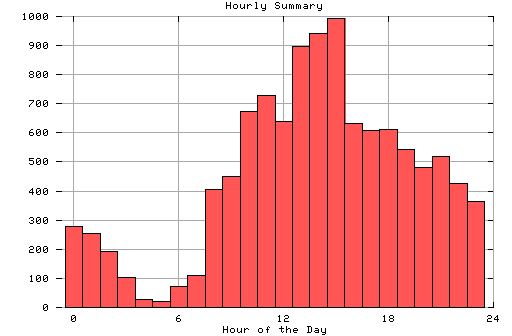

HTTP Server Hourly Summary
Covers: 02/05/96 to 02/12/96 (8 days).
All dates are in local time.
midnite: 280 : ############## 1:00 am: 254 : ############# 2:00 am: 191 : ########## 3:00 am: 103 : ##### 4:00 am: 26 : # 5:00 am: 19 : # 6:00 am: 71 : #### 7:00 am: 109 : ##### 8:00 am: 407 : #################### 9:00 am: 451 : ####################### 10:00 am: 673 : ################################## 11:00 am: 729 : #################################### noon: 640 : ################################ 1:00 pm: 896 : ############################################# 2:00 pm: 941 : ############################################### 3:00 pm: 992 : ################################################## 4:00 pm: 631 : ################################ 5:00 pm: 607 : ############################## 6:00 pm: 610 : ############################### 7:00 pm: 544 : ########################### 8:00 pm: 482 : ######################## 9:00 pm: 519 : ########################## 10:00 pm: 426 : ##################### 11:00 pm: 365 : ##################

Statistics generated at Mon Feb 12 05:08:47 MET 1996, (C) Schibsted Nett AS, 1995.